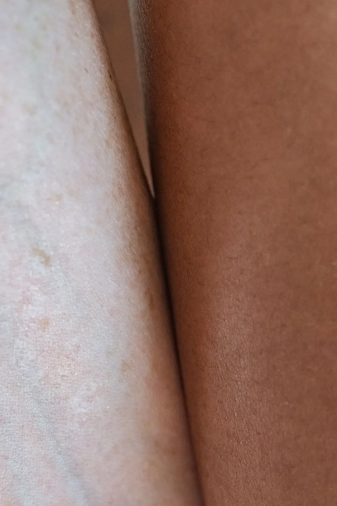

Lipedema y los días de más calor en Medellín: por qué se siente peor la pierna
Te subes a la báscula y el número sigue igual, pero las piernas se ven y se sienten distintas. Si tienes lipedema y esto te pasa justo en los días de más calor, hay una explicación física real detrás.

En Medellín el clima se mantiene templado casi todo el año, pero hay días (el pico de calor de mitad de año, una tarde sin brisa, un viaje a tierra caliente) en que de verdad aprieta. El calor empeora la hinchazón del lipedema por una razón física real, no por nada que hayas hecho distinto ese día.
¿Por qué el calor hace que las piernas con lipedema se sientan peor?
Cuando sube la temperatura, el cuerpo dilata los vasos sanguíneos de la piel para liberar calor: es el mismo mecanismo que te pone las mejillas rojas en un día caluroso. Esa dilatación sube la presión dentro de los capilares y agranda el área por la que puede salir líquido hacia el tejido que está alrededor.
En unas piernas sin lipedema, eso se compensa con facilidad. En el lipedema, donde ya existe una tendencia de base a acumular líquido y una microcirculación más sensible, el mismo efecto se nota mucho más: más hinchazón, más tensión en la piel y, para muchas pacientes, más dolor.
Es el mismo mecanismo que hincha un poco los tobillos de cualquier persona en un día de mucho calor. En el lipedema, simplemente, parte de un punto de base más alto.
¿Qué dice la evidencia sobre el lipedema y el calor?
Aquí conviene ser honestos con lo que hay y con lo que todavía falta. Una revisión de 2024 sobre lipedema (Kamamoto y colaboradores, publicada en el Jornal Vascular Brasileiro) sí describe el edema de las piernas relacionado con estar de pie, el calor y la actividad física como parte del cuadro clínico habitual, y lo conecta con una disfunción temprana de los capilares y del sistema linfático propia del lipedema. La guía de consenso más citada sobre manejo del lipedema en Estados Unidos (Herbst y colaboradores, 2021), en cambio, no nombra el calor como factor explícito: se enfoca más en la compresión y en el ejercicio progresivo según tolerancia.
En la práctica clínica y entre organizaciones de pacientes, describir que el verano es más difícil es algo muy repetido. No es, todavía, un punto formal de consenso en todas las guías médicas, pero sí es consistente con cómo el calor afecta la circulación en general y con lo que muchas pacientes cuentan en consulta.
En Seravena partimos de lo que sí está demostrado: el mecanismo vascular del calor es real, aunque la relación exacta con el lipedema todavía se siga estudiando. Por eso preferimos manejarlo con medidas prudentes y respaldadas, no con ideas sin evidencia.
Qué puedes hacer en los días de más calor (o en un viaje a tierra caliente)
Nada de esto cambia el tejido del lipedema ni lo cura.
Son medidas para que el calor te pese menos mientras pasa.
- No te quites la compresión por el calor. Seguir usándola, incluso en una tela más liviana, transpirable o con punta abierta si tu médico lo aprueba, suele ayudar más que descansar de ella.
- Eleva las piernas cuando puedas, sobre todo al final del día: es la medida más simple y de las que más alivio da en la hinchazón relacionada con el calor.
- Enfría la piel con una ducha o un chorro de agua fría en las piernas. No cambia el fondo del lipedema, pero sí baja la sensación de tensión.
- Sigue moviéndote, aunque el calor invite a quedarte quieta. Caminar, nadar, la bicicleta estática o el yoga, con progresión según cómo respondan tus piernas, están entre las opciones que respaldan las guías de manejo del lipedema.
- Hidrátate y evita el sol directo por muchas horas seguidas, sobre todo si viajas a tierra caliente como Santa Fe de Antioquia o la costa, donde la temperatura supera con facilidad los 30 grados frente al clima mucho más templado de Medellín.
La compresión pensada para lipedema no es igual a la que se usa para várices: en compresión para lipedema: en qué se diferencia de la de várices explicamos cómo elegirla, también para los meses de más calor. Si el dolor es lo que más te preocupa estos días, dolor por lipedema: causas y manejo conservador profundiza en las herramientas para manejarlo. Y si la sensación de pesadez no mejora con estas medidas, el drenaje linfático en el lipedema: qué esperar es otra opción que vale la pena conocer.
Si lo que necesitas es cuidar las piernas en un viaje largo a clima cálido más allá del lipedema, la guía de viajes a tierra caliente: cómo cuidar las piernas tiene las recomendaciones generales. Y si quieres que estas medidas se ajusten a tu etapa y a tus síntomas, en nuestro manejo de lipedema en Medellín lo revisamos contigo.
Cuándo no es solo el calor
Hay una diferencia importante entre la hinchazón típica de un día caluroso y una señal de alarma. La hinchazón por calor en el lipedema suele ser simétrica (parecida en ambas piernas), progresiva a lo largo del día y mejora algo con el reposo y la elevación.
No corresponde a ese patrón cuando la hinchazón aparece de un solo lado, es súbita e intensa, o viene con dolor fuerte en la pantorrilla, calor local marcado, un cambio de color en la piel o, más grave aún, dificultad para respirar. Esas señales no se deben atribuir al clima: ameritan valoración pronta, porque pueden indicar un problema distinto al lipedema.
Antes de tu próxima cita puede servirte anotar en el celular en qué momentos del día notas más hinchazón, si cambia con el calor o con un viaje, y si es igual en ambas piernas: esa información ayuda a diferenciar lo esperable del lipedema de algo que merece mirarse aparte. Si quieres entender qué tanto influye el calor en tu caso particular, agenda una valoración con nosotros en Medellín.
Preguntas frecuentes
¿Por qué el lipedema empeora con el calor?
El calor dilata los vasos sanguíneos de la piel y sube la presión dentro de los capilares, lo que hace que pase más líquido hacia el tejido. En el lipedema, donde ya hay una tendencia de base a retener líquido y una microcirculación más sensible, ese efecto se nota más: más hinchazón, más tensión y más dolor en las piernas.
¿Debo quitarme las medias de compresión cuando hace calor?
No se recomienda suspenderlas solo por el calor: seguir usando la compresión, si tu médico lo aprueba en una tela más liviana o con punta abierta, suele ayudar más que quitártela. Lo que sí puede cambiar es el tipo de tela, para que sea más fresca y transpirable.
¿Es normal que las piernas se vean más hinchadas después de un viaje a tierra caliente?
Sí, es un patrón frecuente: pasar del clima templado de Medellín a uno de tierra caliente, con temperaturas que superan los 30 grados, puede hacer que la hinchazón del lipedema se note más los primeros días. Suele mejorar al volver a la rutina habitual de compresión y movimiento.
¿Cuándo la hinchazón por calor deja de ser normal y hay que consultar?
Cuando aparece de un solo lado, es repentina e intensa, o viene con dolor fuerte, calor local marcado, un cambio de color en la piel o dificultad para respirar. Eso no corresponde al patrón típico de hinchazón por calor y merece valoración médica pronta.